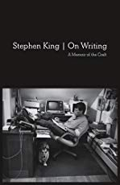
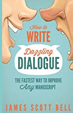

Rating :9/10
About the Author A former trial lawyer, James Scott Bell is the award-winning author of numerous thrillers, including the Ty Buchanan series (Try Dying, Try Darkness, Try Fear). He is also the author of two other popular writing books: Revision & Self-Editing, and The Art of War for Writers. A frequent teacher and keynoter at writing conferences, he resides in Los Angeles
Rating :8/10
About the Author Stephen King is the author of more than fifty books, all of them worldwide bestsellers. His recent work includes The Bill Hodges Trilogy, Revival, and Doctor Sleep. His novel 11/22/63 was named a top ten book of 2011 by The New York Times Book Review and won the Los Angeles Times Book Prize for Mystery/Thriller as well as the Best Hardcover Book Award from the International Thriller Writers Association. He is the recipient of the 2003 National Book Foundation Medal for Distinguished Contribution to American Letters. He lives in Bangor, Maine, with his wife, novelist Tabitha King.
Rating :9/10
About the Author JAMES SCOTT BELL is a winner of the International Thriller Writers Award (for his novel Romeo's Way) and the author of many bestselling thrillers. He is a popular writing instructor and conference speaker, and formerly served as the fiction columnist for Writer's Digest magazine. Jim attended the University of California, Santa Barbara where he studied writing with Raymond Carver, and graduated with honors from the University of Southern California Law School . He lives and writes in L.A.